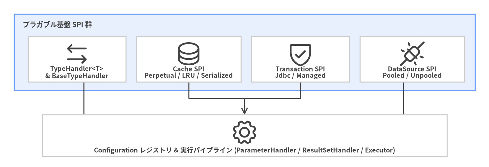

TypeHandler・キャッシュ・トランザクション・DataSource
Java と JDBC 間の型変換 (org.apache.ibatis.type)、L1/L2 キャッシュ (org.apache.ibatis.cache)、トランザクション境界 (org.apache.ibatis.transaction)、および組み込み JDBC コネクションプール (org.apache.ibatis.datasource) の API リファレンスです。

Source Code
from drawlib.canvas import save, setup
from drawlib.diagrams.architecture import ArchitectureDiagram, Node, NodeGroup, PhosphorIcon
from drawlib.styles import Colors, Styles
setup(width=140, height=48, dpi=150)
d = ArchitectureDiagram(
node_style=Styles.Dark,
node_text_style=Styles.DarkBold.patch(text_size=9.5),
edge_style=Styles.Dark.patch(line_width=1.5),
edge_text_style=Styles.DarkBold.patch(text_size=9.0),
node_card_style=Styles.Neutral.patch(shape_fill_color=Colors.White),
)
spi = d.add(
NodeGroup(
"プラガブル基盤 SPI 群",
width=132,
height=22,
style=Styles.PrimaryNeutral,
text_style=Styles.DarkBold.patch(text_size=10.2, halign="left", valign="top"),
),
xy=(4, 22),
)
n_type = spi.add(Node("TypeHandler<T>\n& BaseTypeHandler", icon=PhosphorIcon.ARROWS_LEFT_RIGHT, width=28, height=13), xy=(18, 9))
n_cache = spi.add(Node("Cache SPI\nPerpetual / LRU / Serialized", icon=PhosphorIcon.DATABASE, width=30, height=13), xy=(50, 9))
n_tx = spi.add(Node("Transaction SPI\nJdbc / Managed", icon=PhosphorIcon.SHIELD_CHECK, width=28, height=13), xy=(82, 9))
n_ds = spi.add(Node("DataSource SPI\nPooled / Unpooled", icon=PhosphorIcon.PLUGS_CONNECTED, width=30, height=13), xy=(114, 9))
n_cfg = d.add(
Node("Configuration レジストリ & 実行パイプライン (ParameterHandler / ResultSetHandler / Executor)", icon=PhosphorIcon.GEAR, width=116, height=12),
xy=(70, 9),
)
n_type.connect(n_cfg)
n_cache.connect(n_cfg)
n_tx.connect(n_cfg)
n_ds.connect(n_cfg)
d.draw(xy=(0, 0))
save()
interfaceTypeHandler<T>#
パッケージ: org.apache.ibatis.type
Java の型 T を PreparedStatement のパラメータにバインドし、ResultSet または CallableStatement から T を抽出するためのインターフェースです。
シグネチャ#
public interface TypeHandler<T> {
void setParameter(PreparedStatement ps, int i, T parameter, JdbcType jdbcType) throws SQLException;
T getResult(ResultSet rs, String columnName) throws SQLException;
T getResult(ResultSet rs, int columnIndex) throws SQLException;
T getResult(CallableStatement cs, int columnIndex) throws SQLException;
}
使用例#
SQL の NULL バインドや ResultSet.wasNull() チェックを自動的に処理させるため、TypeHandler<T> を直接実装するのではなく、常に BaseTypeHandler<T> を継承することが推奨されます。
classBaseTypeHandler<T>#
パッケージ: org.apache.ibatis.type
null パラメータ (PreparedStatement.setNull) および TypeException ラッピングを自動処理する、カスタム TypeHandler 実装用の抽象テンプレートクラスです。
オーバーライドする主要テンプレートメソッド#
| メソッド | シグネチャ | 説明 |
|---|---|---|
setNonNullParameter |
void setNonNullParameter(PreparedStatement ps, int i, T parameter, JdbcType jdbcType) |
非 null の Java 値 parameter を 1 始まりの JDBC パラメータインデックス i にバインドします |
getNullableResult(rs, name) |
T getNullableResult(ResultSet rs, String columnName) |
カラム名 / ラベルで値を読み取ります (SQL NULL の場合は null を返します) |
getNullableResult(rs, index) |
T getNullableResult(ResultSet rs, int columnIndex) |
1 始まりのカラムインデックスで値を読み取ります |
getNullableResult(cs, index) |
T getNullableResult(CallableStatement cs, int columnIndex) |
ストアドプロシージャの OUT パラメータから値を読み取ります |
使用例#
@MappedTypes(Money.class)
@MappedJdbcTypes(JdbcType.DECIMAL)
public class MoneyTypeHandler extends BaseTypeHandler<Money> {
@Override
public void setNonNullParameter(PreparedStatement ps, int i, Money parameter, JdbcType jdbcType)
throws SQLException {
ps.setBigDecimal(i, parameter.amount());
}
@Override
public Money getNullableResult(ResultSet rs, String columnName) throws SQLException {
BigDecimal val = rs.getBigDecimal(columnName);
return val == null ? null : new Money(val);
}
@Override
public Money getNullableResult(ResultSet rs, int columnIndex) throws SQLException {
BigDecimal val = rs.getBigDecimal(columnIndex);
return val == null ? null : new Money(val);
}
@Override
public Money getNullableResult(CallableStatement cs, int columnIndex) throws SQLException {
BigDecimal val = cs.getBigDecimal(columnIndex);
return val == null ? null : new Money(val);
}
}
classTypeHandlerRegistry#
パッケージ: org.apache.ibatis.type
Java の型とオプションの JdbcType 定数を TypeHandler インスタンスにマッピングする 2 階層ルックアップテーブル (Map<Type, Map<JdbcType, TypeHandler<?>>>) です。40 種類以上の標準ハンドラ (StringTypeHandler、LongTypeHandler、LocalDateTimeTypeHandler、EnumTypeHandler など) が事前登録されています。
主要メソッド#
| メソッド | シグネチャ | 説明 |
|---|---|---|
register(Class<T>, TypeHandler) |
<T> void register(Class<T> javaType, TypeHandler<? extends T> typeHandler) |
特定の Java クラスに対するハンドラを登録します |
register(Class<?>) |
void register(Class<?> typeHandlerClass) |
@MappedTypes と @MappedJdbcTypes を検査してハンドラクラスを登録します |
register(String) |
void register(String packageName) |
指定パッケージ内の TypeHandler 実装をクラスパススキャンして登録します |
setDefaultEnumTypeHandler |
void setDefaultEnumTypeHandler(Class<? extends TypeHandler> typeHandler) |
デフォルトの Enum ハンドラ (EnumOrdinalTypeHandler など) を切り替えます |
classTypeAliasRegistry#
パッケージ: org.apache.ibatis.type
短いエイリアス文字列 ("long"、"map"、"author" など) を XML 設定や Mapper ファイルで使用される Class<?> オブジェクトにマッピングする、大文字・小文字を区別しないレジストリです。
主要メソッド#
| メソッド | シグネチャ | 説明 |
|---|---|---|
registerAlias(String, Class<?>) |
void registerAlias(String alias, Class<?> value) |
クラスに対する明示的なエイリアスを登録します |
registerAliases(String) |
void registerAliases(String packageName) |
パッケージ内のすべてのクラスを単純クラス名または @Alias の値で登録します |
resolveAlias(String) |
<T> Class<T> resolveAlias(String string) |
エイリアスまたは完全修飾クラス名を Class<T> に解決します |
enumJdbcType#
パッケージ: org.apache.ibatis.type
java.sql.Types の整数定数 (VARCHAR、BIGINT、TIMESTAMP、NUMERIC、OTHER、NULL など) をラップする列挙型です。
使用例#
<insert id="insertUser">
INSERT INTO users (id, email, bio)
VALUES (#{id}, #{email}, #{bio,jdbcType=VARCHAR})
</insert>
annotation @MappedTypes#
パッケージ: org.apache.ibatis.type
クラス登録またはパッケージスキャン時に TypeHandler が処理対象とする Java クラスを宣言します。
@Documented
@Retention(RetentionPolicy.RUNTIME)
@Target(ElementType.TYPE)
public @interface MappedTypes {
Class<?>[] value();
}
annotation @MappedJdbcTypes#
パッケージ: org.apache.ibatis.type
クラス登録またはパッケージスキャン時に TypeHandler が処理対象とする JdbcType 定数を宣言します。
@Documented
@Retention(RetentionPolicy.RUNTIME)
@Target(ElementType.TYPE)
public @interface MappedJdbcTypes {
JdbcType[] value();
boolean includeNullJdbcType() default false;
}
interfaceCache#
パッケージ: org.apache.ibatis.cache
MyBatis の L1 (PerpetualCache) および L2 (CachingExecutor) キャッシュのコア SPI です。Decorator パターン (LruCache、FifoCache、SerializedCache、LoggingCache、SynchronizedCache、BlockingCache、TransactionalCache) を使用して、ベースとなるストレージ実装の上にエビクション、シリアライズ、トランザクション分離を重ね合わせます。
シグネチャ#
public interface Cache {
String getId();
void putObject(Object key, Object value);
Object getObject(Object key);
Object removeObject(Object key);
void clear();
int getSize();
default ReadWriteLock getReadWriteLock() { return null; }
}
classPerpetualCache#
パッケージ: org.apache.ibatis.cache.impl
BaseExecutor 内の L1 localCache として、またデコレートされた L2 キャッシュの最内層のストレージターゲットとして使用される、HashMap<Object, Object> ベースの Cache 実装です。
classLruCache#
パッケージ: org.apache.ibatis.cache.decorators
キャッシュサイズが size (デフォルト 1024) を超えた際に、アクセス順追跡付きの LinkedHashMap を用いて最も長く参照されていないエントリを削除する Decorator Cache です。
classSerializedCache#
パッケージ: org.apache.ibatis.cache.decorators
readOnly="false" (<cache/> のデフォルト) のときに有効化される Decorator Cache です。複数のセッションが共有インスタンスを変更できないよう、putObject 時にキャッシュ対象の Java オブジェクトを byte[] にシリアライズし、getObject 時に新しいコピーをデシリアライズします。また、SerialFilterChecker.check() を 1 度呼び出し、JEP-290 の jdk.serialFilter が設定されていない場合に警告を出力します。
interfaceTransaction#
パッケージ: org.apache.ibatis.transaction
JDBC Connection をラップし、そのトランザクションライフサイクル (getConnection()、commit()、rollback()、close()、getTimeout()) を管理します。
実装クラス#
| 実装クラス | パッケージ | 動作 |
|---|---|---|
JdbcTransaction |
org.apache.ibatis.transaction.jdbc |
Connection.setAutoCommit(false)、commit()、rollback() を直接制御します |
ManagedTransaction |
org.apache.ibatis.transaction.managed |
コミット / ロールバックのライフサイクルを外部コンテナ (Spring、Jakarta EE など) に委譲します |
interfaceTransactionFactory#
パッケージ: org.apache.ibatis.transaction
既存の Connection または DataSource から Transaction インスタンスを生成するファクトリです。
public interface TransactionFactory {
default void setProperties(Properties props) {}
Transaction newTransaction(Connection conn);
Transaction newTransaction(DataSource dataSource, TransactionIsolationLevel level, boolean autoCommit);
}
classPooledDataSource#
パッケージ: org.apache.ibatis.datasource.pooled
<dataSource type="POOLED"> で設定される組み込みの同期型 JDBC javax.sql.DataSource コネクションプールです。アクティブおよびアイドル状態の PooledConnection プロキシを PoolState 内で追跡します。
主要設定プロパティ#
| プロパティ | デフォルト | 説明 |
|---|---|---|
poolMaximumActiveConnections |
10 |
同時アクティブ接続の最大数 |
poolMaximumIdleConnections |
5 |
プール内に保持されるアイドル接続の最大数 |
poolMaximumCheckoutTime |
20000 (ミリ秒) |
期限切れとして強制回収されるまでの最大チェックアウト時間 |
poolTimeToWait |
20000 (ミリ秒) |
プール枯渇時に再試行するまでの待機時間 |
poolPingEnabled |
false |
チェックアウト / チェックイン時の死活監視クエリ (poolPingQuery) を有効化 |
classUnpooledDataSource#
パッケージ: org.apache.ibatis.datasource.unpooled
<dataSource type="UNPOOLED"> で設定されるシンプルな javax.sql.DataSource 実装で、リクエストごとに新しい JDBC DriverManager.getConnection(...) を開きます。CLI スクリプトやインメモリデータベースを用いた単体テストに適しています。